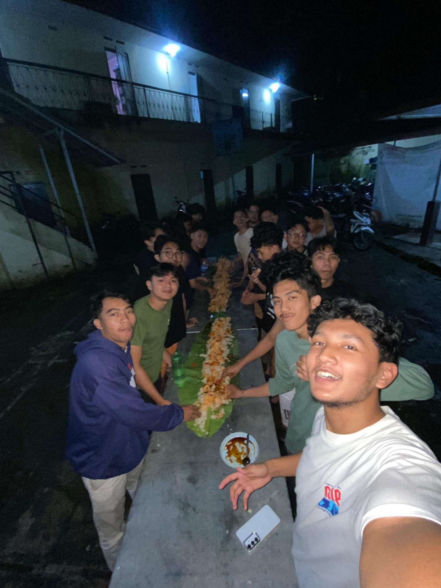
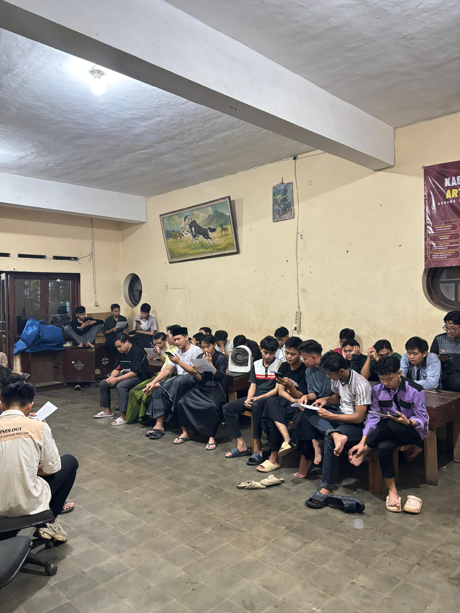
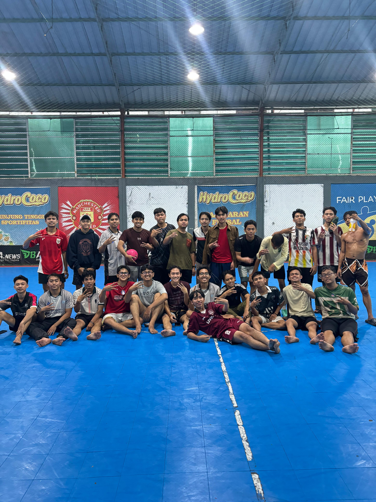
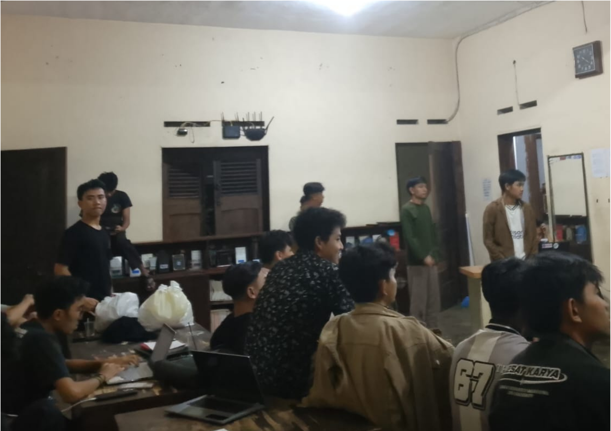
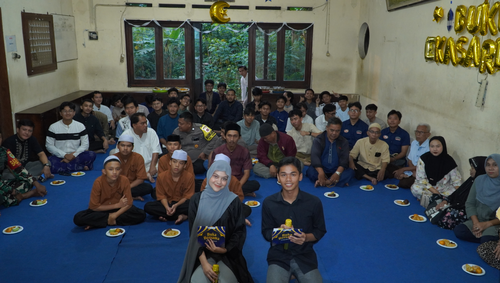
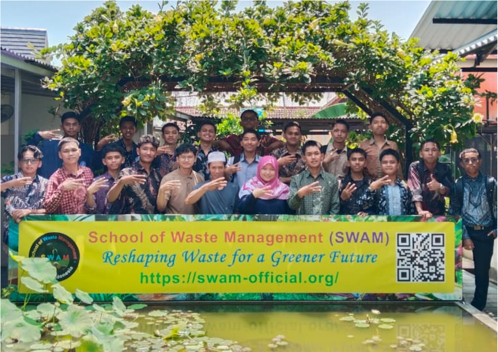
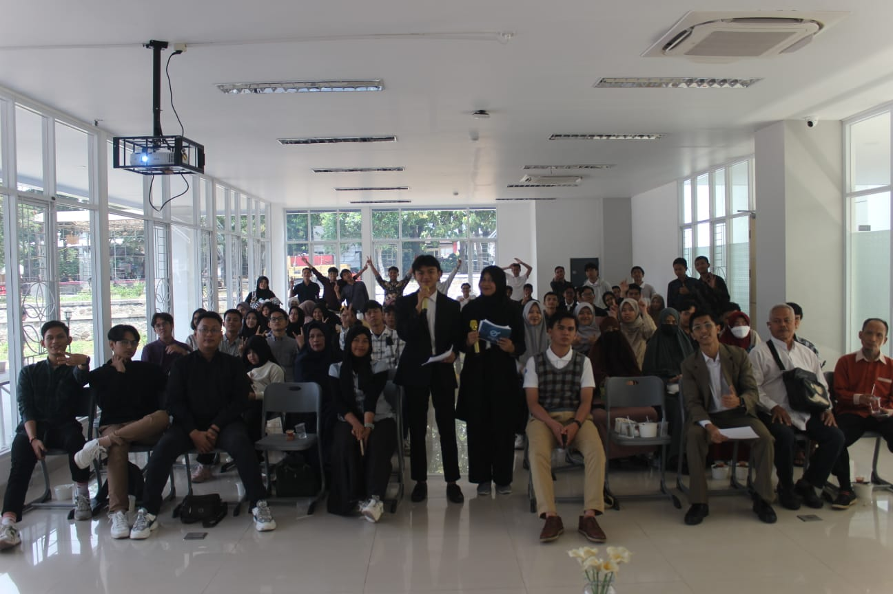
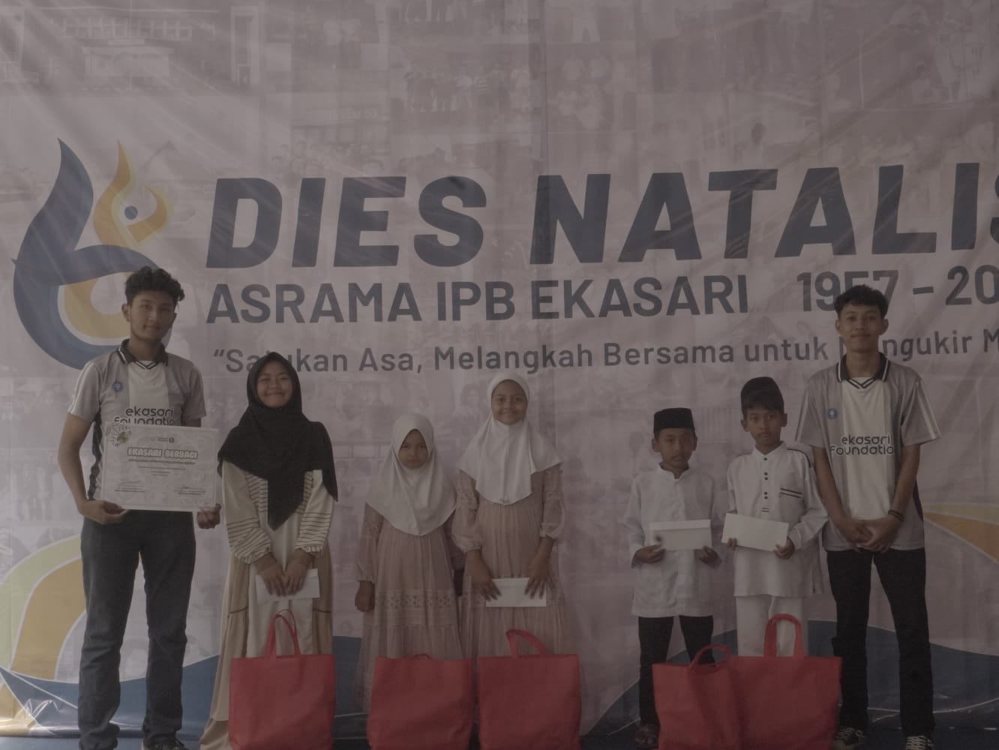

Makan Bersama
Makan bersama adalah kegiatan rutin yang mempererat hubungan silaturahmi antar penghuni dan pengurus asrama. Momen ini menjadi ajang berbagi cerita, pengalaman, dan membangun rasa kekeluargaan yang kuat.

Kerja Bakti
Kerja bakti adalah kegiatan gotong royong yang melibatkan seluruh warga asrama untuk bersama-sama merawat kebersihan dan kerapian lingkungan hunian. Kegiatan ini menumbuhkan rasa memiliki dan tanggung jawab terhadap fasilitas bersama.

Dies Natalis
Dies Natalis adalah perayaan hari ulang tahun Asrama Ekasari yang dirayakan setiap tahun dengan berbagai rangkaian acara, mulai dari pertandingan olahraga, lomba kreativitas, hingga malam puncak perayaan yang meriah bersama seluruh warga.

Pengajian
Pengajian rutin diadakan untuk meningkatkan keimanan dan memperdalam pengetahuan agama warga asrama. Kegiatan ini juga menjadi sarana pembinaan spiritual yang positif di tengah kesibukan akademik.

Olahraga
Olahraga bersama dilakukan secara rutin untuk menjaga kebugaran dan kesehatan fisik seluruh warga. Berbagai jenis olahraga seperti futsal, badminton, dan lari pagi menjadi pilihan kegiatan yang diminati.

Rapat Warga
Rapat warga adalah forum musyawarah terbuka yang dihadiri seluruh penghuni asrama untuk membahas berbagai isu, membuat keputusan bersama, dan menyampaikan aspirasi demi kemajuan asrama.

Buka Bersama
Buka bersama di bulan Ramadhan adalah tradisi yang sangat ditunggu-tunggu, mempererat ukhuwah islamiyah antar warga asrama sekaligus menjadi momen refleksi dan rasa syukur bersama.

Ekasari Visit
Ekasari Visit adalah program kunjungan edukatif ke berbagai tempat bersejarah, industri, atau institusi pemerintahan yang bertujuan memperluas wawasan dan pengalaman nyata bagi warga asrama di luar lingkungan kampus.

Ekasari Seminar
Ekasari Seminar menghadirkan narasumber dari berbagai bidang untuk memberikan wawasan baru tentang pengembangan karier, kewirausahaan, dan kompetensi profesional kepada warga asrama.

Ekasari Berbagi
Ekasari Berbagi adalah program pengabdian masyarakat di mana warga asrama turun langsung ke komunitas sekitar untuk berbagi kepedulian, mulai dari donasi, bakti sosial, hingga kegiatan pendidikan bagi anak-anak kurang mampu.